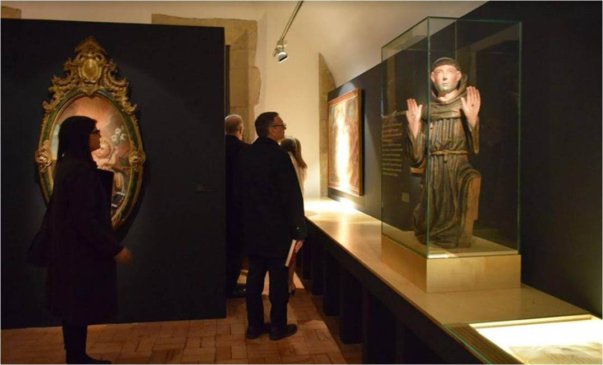

Exposição 'De Fernão se fez António'
Acessível até 17 janeiro 2021 | Mosteiro de Santa Cruz
No âmbito do Jubileu dos Mártires de Marrocos e de Santo António foi inaugurada no último domingo, 2 de fevereiro 2020, na Antiga Livraria do Mosteiro de Santa Cruz, a exposição intitulada ‘De Fernão se fez António’. Contando com cerca de 40 peças de diferentes tipologias, coleções de museus nacionais e privados de todo o país, e de particulares da região centro, a exposição centra-se na figura do Santo de Lisboa, de Coimbra e de Pádua desenvolvendo-se em 4 núcleos: da vocação e da formação e juventude em S. Vicente de Fora (Lisboa) e em Santa Cruz (Coimbra), até ao momento da mudança de Cónego Regrante de Santo Agostinho para Frade Menor, em que assume a sua missão e testemunho do martírio e, finalmente, a sua universalidade, através do culto por diferentes povos e com formas diversas de expressão. Com a duração de cerca de um ano, esta exposição encerrará a 17 de janeiro de 2021, no último dia do Jubileu.
Este projeto expositivo conta com a organização e parceria do Museu Nacional de Machado de Castro (MNMC) e do Museu Nacional de Arte Antiga (MNAA), associando-se às exposições ‘Guerreiros e Mártires. A Cristandade e o Islão na Formação de Portugal’ de 4 de junho a 6 de setembro no MNAA e ‘Do Martírio à Santidade. Iconografia e Devoção dos Mártires de Marrocos’ de 12 setembro a 30 novembro no MNMC.
Partilhamos consigo o registo de alguns momentos da inauguração da exposição no Mosteiro de Santa Cruz, em Coimbra.
